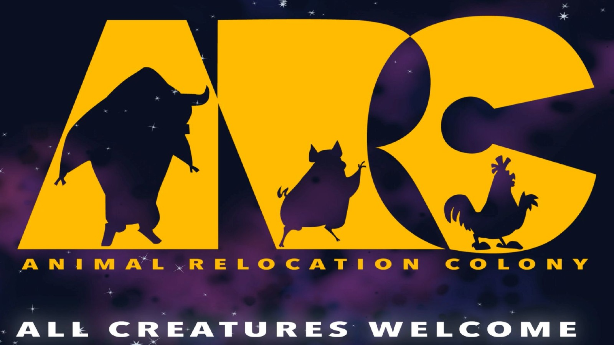

Episodic writing.
Contributing to ARC’s multi-episode storytelling, characters and evolving animated world.
Building characters, worlds and episodic stories with Needle on the Sketch — featuring ARC, the studio’s flagship animated project.

ARC: Animal Relocation Colony is an original animated comedy-adventure about three animal heroes awakened early from cryogenic stasis. Together with a sentient computer, they navigate space in search of a new home for the creatures aboard.
Its world combines character-driven adventures with the possibilities of original music and interactive storytelling. The studio presentation describes ARC as an animated project for children and families.
Series premise and format are drawn from the studio’s ARC presentation. Development plans are not represented here as released productions.
Writing for a world that keeps growing.
Christopher Tafoya contributed to the writing of 23 episodes of ARC, collaborating on the ongoing development of the studio’s flagship animated series.
His broader animation work includes story development, voice performance, original music, animatic audio, and performance direction. An original ARC backstory animatic is part of his documented project archive.
The 23-episode writing contribution is creator-reported. This page does not claim sole writing credit, showrunner status, or that all episodes have been publicly released.
Contributing to ARC’s multi-episode storytelling, characters and evolving animated world.
Voice performance, original music, animatic audio and performance direction supporting animated storytelling.
Writing and creative contributions across additional original properties in development. Unannounced titles and story details are intentionally withheld.
Christopher is a co-owner and creative collaborator at Needle on the Sketch, working alongside veteran Disney animator Travis Blaise.
ARC is presented as a collaborative studio property. Christopher’s credits here describe his writing, performance and creative contributions, not sole ownership or direction of the production.
The studio’s earlier project materials use the name SketchToAnimate; the current studio identity is Needle on the Sketch.
Explore the original animation materials and the studio’s ARC presentation. The supporting archive includes an ARC backstory animatic and project-development documentation.
Portfolio documentation only. Unreleased scripts, private story details and unapproved studio assets are not published on this page.